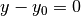

Creating XML Input Files¶
Unlike many other Monte Carlo codes which use an arbitrary-format ASCII file with “cards” to specify a particular geometry, materials, and associated run settings, the input files for OpenMC are structured in a set of XML files. XML, which stands for eXtensible Markup Language, is a simple format that allows data to be exchanged efficiently between different programs and interfaces.
Anyone who has ever seen webpages written in HTML will be familiar with the structure of XML whereby “tags” enclosed in angle brackets denote that a particular piece of data will follow. Let us examine the follow example:
<person>
<firstname>John</firstname>
<lastname>Smith</lastname>
<age>27</age>
<occupation>Health Physicist</occupation>
</person>
Here we see that the first tag indicates that the following data will describe a person. The nested tags firstname, lastname, age, and occupation indicate characteristics about the person being described.
In much the same way, OpenMC input uses XML tags to describe the geometry, the materials, and settings for a Monte Carlo simulation.
Overview of Files¶
To assemble a complete model for OpenMC, one needs to create separate XML files for the geometry, materials, and settings. Additionally, an optional tallies XML file specifies physical quantities to be tallied. OpenMC expects that these files are called:
- geometry.xml
- materials.xml
- setings.xml
- tallies.xml
Geometry Specification – geometry.xml¶
The geometry in OpenMC is described using constructive solid geometry (CSG), also sometimes referred to as combinatorial geometry. CSG allows a user to create complex objects using Boolean operators on a set of simpler surfaces. In the geometry model, each unique closed volume in defined by its bounding surfaces. In OpenMC, most quadratic surfaces can be modeled and used as bounding surfaces.
Every geometry.xml must have an XML declaration at the beginning of the file and a root element named geometry. Within the root element the user can define any number of cells, surfaces, and lattices. Let us look at the following example:
<?xml version="1.0">
<geometry>
<!-- This is a comment -->
<surface>
<uid>1</uid>
<type>sphere</type>
<coeffs>0.0 0.0 0.0 5.0</coeffs>
<boundary>vacuum</boundary>
<surface>
<cell>
<uid>1</uid>
<universe>0</universe>
<material>1</material>
<surfaces>-1</surfaces>
</cell>
</geometry>
At the beginning of this file is a comment, denoted by a tag starting with <!-- and ending with -->. Comments, as well as any other type of input, may span multiple lines. One convenient feature of the XML input format is that sub-elements of the cell and surface elements can also be equivalently expressed of attributes of the original element, e.g. the geometry file above could be written as:
<?xml version="1.0">
<geometry>
<!-- This is a comment -->
<surface uid="1" type="sphere" coeffs="0.0 0.0 0.0 5.0" boundary="vacuum" />
<cell uid="1" universe="0" material="1" surfaces="-1" />
</geometry>
Each surface element can have the following attributes or sub-elements:
uid: A unique integer that can be used to identify the surface.
Default: None
type: The type of the surfaces. This can be x-plane, y-plane, z-plane, plane, x-cylinder, y-cylinder, z-cylinder, or sphere.
Default: None
coeffs: The corresponding coefficients for the given type of surface. See below for a list a what coefficients to specify for a given surface
Default: None
boundary: The boundary condition for the surface. This can be vacuum or reflective.
Default: reflective
Each cell element can have the following attributes or sub-elements:
uid: A unique integer that can be used to identify the surface.
Default: None
universe: The uid of the universe that this cell is contained in.
Default: 0
fill: The uid of the universe that fills this cell.
Note
If a fill is specified, no material should be given.
Default: None
material: The uid of the material that this cell contains.
Note
If a material is specified, no fill should be given.
Default: None
surfaces: A list of the uids for surfaces that bound this cell, e.g. if the cell is on the negative side of surface 3 and the positive side of surface 5, the bounding surfaces would be given as “-3 5”.
Default: None
The following quadratic surfaces can be modeled:
| x-plane: | A plane perpendicular to the x axis, i.e. a surface of the form  . The coefficients specified are “ . The coefficients specified are “ ”. ”. |
|---|---|
| y-plane: | A plane perpendicular to the y axis, i.e. a surface of the form . The coefficients specified are “ ”. ”. |
| z-plane: | A plane perpendicular to the z axis, i.e. a surface of the form  . The coefficients specified are “ . The coefficients specified are “ ”. ”. |
| plane: | An arbitrary plane of the form  . The coefficients
specified are “ . The coefficients
specified are “ ”. ”. |
| x-cylinder: | An infinite cylinder whose length is paralle to the x-axis. This is a
quadratic surface of the form  . The
coefficients specified are “ . The
coefficients specified are “ ”. ”. |
| y-cylinder: | An infinite cylinder whose length is paralle to the y-axis. This is a
quadratic surface of the form  . The
coefficients specified are “ . The
coefficients specified are “ ”. ”. |
| z-cylinder: | An infinite cylinder whose length is paralle to the z-axis. This is a
quadratic surface of the form  . The
coefficients specified are “ . The
coefficients specified are “ ”. ”. |
| sphere: | A sphere of the form  . The coefficients specified are “ . The coefficients specified are “ ”. ”. |
Materials Specification – materials.xml¶
Each material element can have the following attributes or sub-elements:
density: An element with attributes/sub-elements called value and units. The value attribute is the numeric value of the density while the units can be “g/cm3”, “kg/m3”, “atom/b-cm”, or “atom/cm3”. For example, this could be specified as:
<density value="4.5" units="g/cm3" />Default: None
nuclide: An element with attributes/sub-elements called name, xs, and ao or wo. The name attribute is the name of the cross-section for a desired nuclide while the xs attribute is the cross-section identifier. Finally, the ao and wo attributes specify the atom or weight percent of that nuclide within the material, respectively. One example would be as follows:
<nuclide name="H-1" xs="03c" ao="2.0" /> <nuclide name="O-16" xs="03c" ao="1.0" />Note
If one nuclide is specified in atom percent, all others must also be given in atom percent. The same applies for weight percentages.
Default: None
Settings Specification – settings.xml¶
All simulation parameters and miscellaneous options are specified in the settings.xml file. The following elements can be specified:
- xslibrary
- criticality
- verbosity
- source
The xslibrary element has the following attributes:
path: The absolute or relative path of the xsdata file which lists cross sections to be used in the simulation.
Default: None
The criticality element indicates that a criticality calculation should be performed. It has the following attributes/sub-elements:
cycles: The number of total fission source iterations.
Default: None
inactive: The number of inactive fission source iterations. In general, the starting cycles in a criticality calculation can not be used to contribute to tallies since the fission source distribution and eigenvalue are generally not converged immediately
Default: None
particles: The number of neutrons to simulate per fission source iteration.
Default: None
The verbosity element tells the code how much information to display to the standard output. A higher verbosity corresponds to more information being displayed. This element takes the following attributes:
value: The specified verbosity between 1 and 10.
Default: 5
The source element gives information on an initial source guess for criticality calculations. It takes the following attributes:
type: The type of source distribution. Currently, the only accepted option is “box” coeffs: For a “box” source distribution, coeffs should be given as six integers, the first three of which specify the lower-left corner of a parallelepiped and the last three of which specify the upper-right corner. Source sites are sampled uniformly through that parallelepiped.
Tallies Specification – tallies.xml¶
The tallies.xml file allows the user to tell the code what results he/she is interested in, e.g. the fission rate in a given cell or the current across a given surface. There are two pieces of information that determine what quantities should be scored. First, one needs to specify what region of phase space should count towards the tally and secondly, the actual quantity to be scored also needs to be specified. The first set of parameters we call filters since they effectively serve to filter events, allowing some to score and preventing others from scoring to the tally.
The structure of tallies in OpenMC is flexible in that any combination of filters can be used for a tally. The following types of filter are available: cell, universe, material, surface, birth region, pre-collision energy, post-collision energy, and an arbitrary structured mesh.
The two valid elements in the tallies.xml file are tally and mesh. The tally element accepts the following sub-elements:
filters: A list of filters to specify what region of phase space should contribute to the tally. See below for full details on what filters are available. macros: The desired responses to be accumulated. See below for full details on what responses can be tallied.
The following filters can be specified for a tally:
cell: A list of cells in which the tally should be accumulated. cellborn: This filter allows the tally to be scored to only when particles were originally born in a specified cell. surface: A list of surfaces for which the tally should be accumulated. material: A list of materials for which the tally should be accumulated. universe: A list of universes for which the tally should be accumulated. energy: A monotonically increasing list of bounding pre-collision energies for a number of groups. For example, if the following energy filter is specified as <energy>0.0 1.0 20.0</energy>, then two energy bins will be created, one with energies between 0 and 1 MeV and the other with energies between 1 and 20 MeV. energyout: A monotonically increasing list of bounding post-collision energies for a number of groups. For example, if the following energy filter is specified as <energy>0.0 1.0 20.0</energy>, then two energy bins will be created, one with energies between 0 and 1 MeV and the other with energies between 1 and 20 MeV. mesh: The id of a structured mesh to be tallied over.
The following responses can be tallied.
flux: Total flux total: Total reaction rate scatter: Total scattering rate nu-scatter: Total production of neutrons due to scattering. This accounts for multiplicity from (n,2n), (n,3n), and (n,4n) reactions and should be slightly higher than the scattering rate. scatter-1: First scattering moment scatter-2: Second scattering moment scatter-3: Third scattering moment absorption: Total absorption rate. This accounts for all reactions which do not produce secondary neutrons. fission: Total fission rate nu-fission: Total production of neutrons due to fission
If a structured mesh is desired as a filter for a tally, it must be specified in a separate element with the tag name mesh. This element has the following attributes/sub-elements:
type: The type of structured mesh. Valid options include “rectangular” and “hexagonal”. origin: The lower-left corner of the structured mesh. If only two coordinate are given, it is assumed that the mesh is an x-y mesh. dimension: The number of mesh cells in each direction. width: The width of mesh cells in each direction.